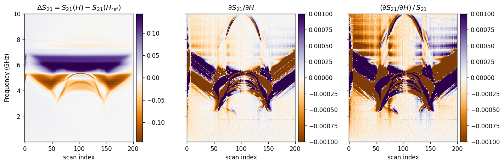
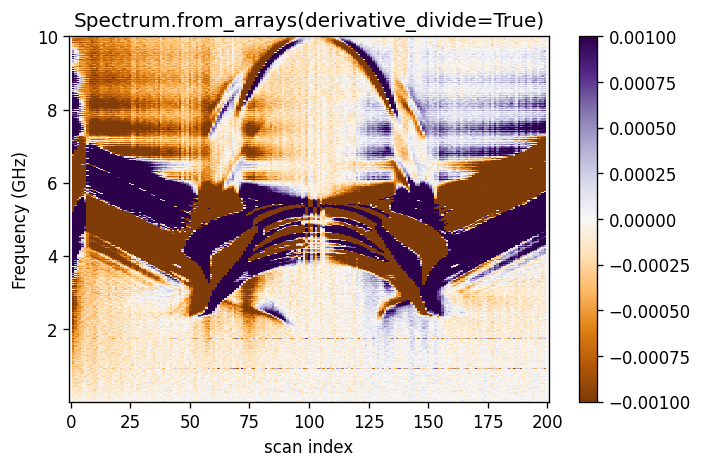
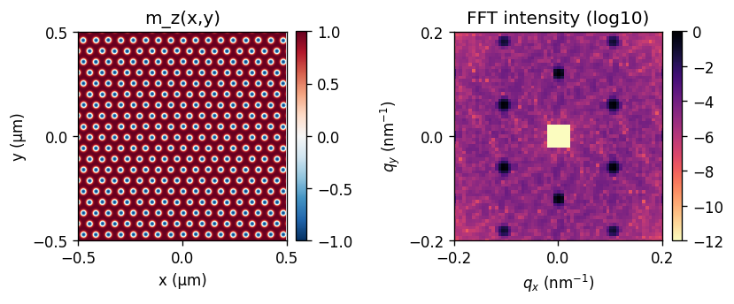
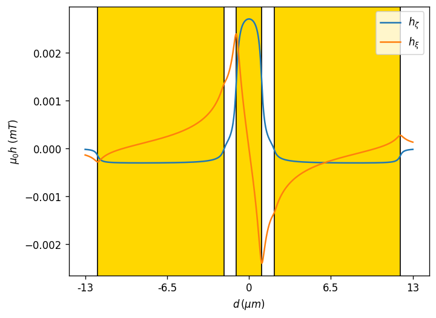

Spectrum
Load 2-D FMR data, correct backgrounds, denoise, zoom, plot, and perform arithmetic on spectra.
Spectrum.from_arrays(...)
drlib brings FMR spectroscopy analysis, complex peak fitting, coplanar-waveguide field modelling, and 2-D REXS simulation into one reusable Python package.

Core modules
The toolkit is organised around four focused components. Each can be used independently or combined in one end-to-end workflow.
Load 2-D FMR data, correct backgrounds, denoise, zoom, plot, and perform arithmetic on spectra.
Spectrum.from_arrays(...)
Extract constant-field cuts and fit one, two, or three resonances using complex line shapes.
Linecut.one_peak(...)
Calculate analytical Biot–Savart fields above a signal-gap-ground waveguide and inspect k-space excitation.
CPW.get_Kspectrum(...)
Build skyrmion, helical, multidomain, or coexistence textures and simulate their FFT intensity.
REXS2D.compute_qspace()
Selected outputs
The figures below are produced by the library’s bundled examples and reference dataset.

Apply background correction to a frequency-versus-field dataset while preserving the full 2-D structure for later cuts and fits.

Generate a real-space skyrmion lattice and its reciprocal-space FFT intensity with REXS2D.

Evaluate the analytical magnetic-field profile above a coplanar waveguide and connect geometry to excitation.
Quickstart
Load the bundled MATLAB files, create a corrected spectrum, select a field cut, and fit a complex FMR peak.
Spectrum with derivative-divide correction.Linecut and fit the resonance.from drlib import (
Spectrum, Linecut, load_mat_dataset
)
freq, field, mlin, mlin_ref = load_mat_dataset(
"PRJCT/Data"
)
spec = Spectrum.from_arrays(
freq, field, mlin, mlin_ref,
saturation=200,
derivative_divide=True,
)
cut = Linecut(
cut=80,
Spectrum=spec,
frequencies=(3.5e9, 4.7e9),
)
freq_cut, fit, params, report = cut.one_peak(
resonance=[4.2e9]
)Flexible input
All supported constructors converge on the same internal representation, so downstream plotting, fitting, and arithmetic stay identical.
API at a glance
The package also exposes compact utilities for signal processing, line-shape modelling, field calculations, and plotting.
derivative(...)derivative_divide(...)FFT_1D(...)compare_techniques(...)dS21(...)Lorentzian(...)B_BS_analytic(...)CPW(...)load_mat_dataset(...)read_measurement_txt(...)safe_style(...)set_size(...)Install locally
Clone the repository, install it, and work through the bundled notebook and reference data.